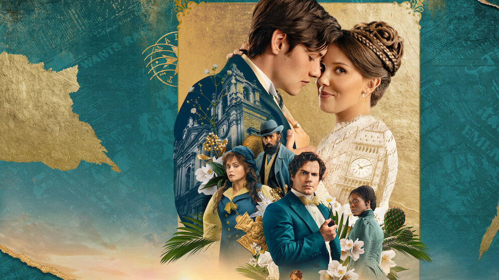
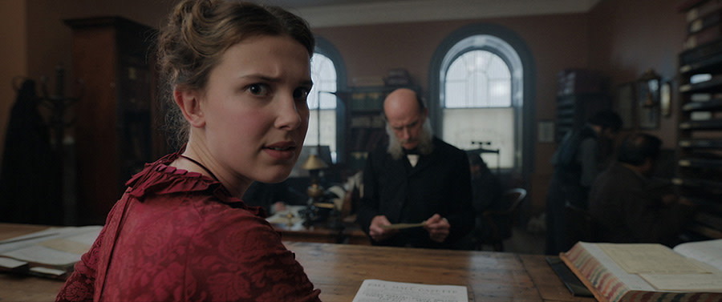

Enola Holmes：
母亲、女儿，以及成为自己的路
我们熟悉Sherlock Holmes，却未必认识他的妹妹Enola。比起再讲一遍她如何破案，这次我更想聊聊她和母亲Eudoria：一个女孩如何带着母亲留下的东西长大，又如何在爱与不解之间，慢慢成为自己。
本期图片只使用仓库中《福尔摩斯小姐》电影系列相关的海报与剧照。

01 / 电影系列：女孩开始寻找自己的答案
Enola的故事有悬疑、有喜剧，也有追逐与冒险。她并不是一开始就知道自己要成为什么样的人。她只是很早就意识到：如果别人已经替她安排好人生，她至少要先弄清楚自己想要什么。


本期视觉素材均选自仓库中与《福尔摩斯小姐》系列相关的电影海报、宣传图与剧照；不同宣传素材不混称为剧情剧照。


02 / 母亲与女儿：爱不一定表现为理解


母女关系常常同时包含爱、期待、误解和无法说出口的部分。Eudoria并不是一个只负责给女儿温柔建议的母亲，她有自己的信念、行动和秘密。她对女儿的爱并不总以容易理解的方式出现，而Enola也不需要通过完全认同母亲，才能证明自己爱她。
对女儿来说，长大不意味着必须把母亲理想化；对母亲来说，爱女儿也不意味着可以替她决定一切。真正困难的部分，是在亲近之中仍然承认彼此是独立的人。
我们很容易把“母亲”想象成一个稳定的身份，好像她天生就应该知道答案、承担责任、为孩子牺牲。但Eudoria首先也是一个有政治信念、有恐惧、有计划的女人。她的选择可能让女儿困惑，甚至带来真实的风险；理解她的动机，并不意味着所有做法都无需讨论。
反过来，Enola也不必通过反抗母亲来证明自己独立。她可以想念她、寻找她，也可以对她生气。关系真正成熟的时刻，或许不是两个人终于意见一致，而是即使没有完全一致，也愿意把对方当作一个完整的人。
03 / 女性成长不是复制另一个女性


Enola从母亲那里继承了很多东西，却不必活成另一个Eudoria。她可以学习母亲的勇气，也可以质疑母亲的选择；可以珍惜母亲留下的线索，也可以走向一条母亲没有走过的路。
这也是女性成长很重要的一部分：我们可以受他人影响，但不必把任何人的人生当作标准答案。独立并不意味着永远不需要别人，而是即使爱着别人，也仍然有权参与决定自己的生活。
电影里的Enola拥有机敏、行动力和幽默感，但她不是一种必须被复制的“正确女性”。不是每个人都要像她一样冒险，也不是所有人都必须用强硬的方式表达自己。一个人可以谨慎，可以寻求帮助，可以暂时没有答案；重要的是，她的选择不是被默认剥夺的。
当我们谈论女性独立时，也要小心不要把结构问题变成个人作业。并非每个人都拥有同样的经济条件、家庭支持与社会空间。尊重自主，也包括看见限制，不把困境简单归咎于一个人“不够努力”。
04 / 镜头之外：谁有权定义一个女孩
女性主义不只是把女性角色放在故事中央。更重要的是，电影是否允许她们拥有自己的动机、矛盾、判断和后果，是否承认她们不只是推动其他人物成长的工具。
《福尔摩斯小姐》用轻快的节奏讲述冒险，也留下了值得认真讨论的问题：谁有权决定一个女孩应该成为什么样的人？当母亲与女儿都试图改变世界，她们能否既相爱，又保留各自的道路？
电影不需要替我们回答所有问题。它能做的，是把问题放到眼前，让我们有机会重新看见那些曾被当作理所当然的规则。
这也是这套电影适合被反复观看的原因之一：它用轻盈的冒险故事包裹了一个并不轻盈的问题——当社会早已替你写好角色说明书，你能不能把它拿回来，自己修改？Enola的反应有时冲动，有时聪明，有时也会犯错；她不是因为从不失手才值得被看见，而是因为故事允许她继续行动、继续判断。
05 / 轻快并不等于浅薄
这部系列的喜剧感、第四面墙式的交流和快速推进的冒险，让观众可以轻松进入故事。轻快的形式并不会自动削弱议题；有时它反而让关于权力、性别角色和社会期待的问题更容易被看见。关键在于，我们是否愿意在娱乐之外多想一步，也是否承认电影本身有局限。
我们不必把它当成女性主义的完整答案。它仍是一部商业类型片，有自己的叙事取舍与浪漫化表达。但Enola的好奇心、行动力，以及她与母亲之间并不简单的关系，足够成为一个很好的起点。
06 / 写在最后
我喜欢Enola身上那种机敏、幽默和不愿轻易服从的劲头，也喜欢这个故事没有要求她必须在母亲、爱情、家庭和自我之间交出一个唯一正确的答案。
或许长大不是终于变成一个无所不能的人，而是慢慢知道：我可以爱我的母亲，也可以与她不同；我可以听取别人的意见，也可以自己做决定；我可以在寻找答案的路上不断改变。
你和母亲之间，有没有一件事，是长大以后才开始理解、但仍然不完全认同的？